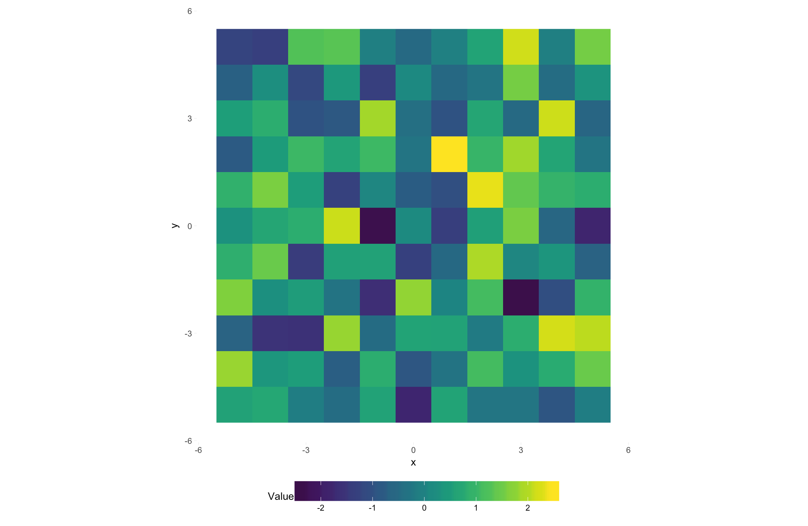
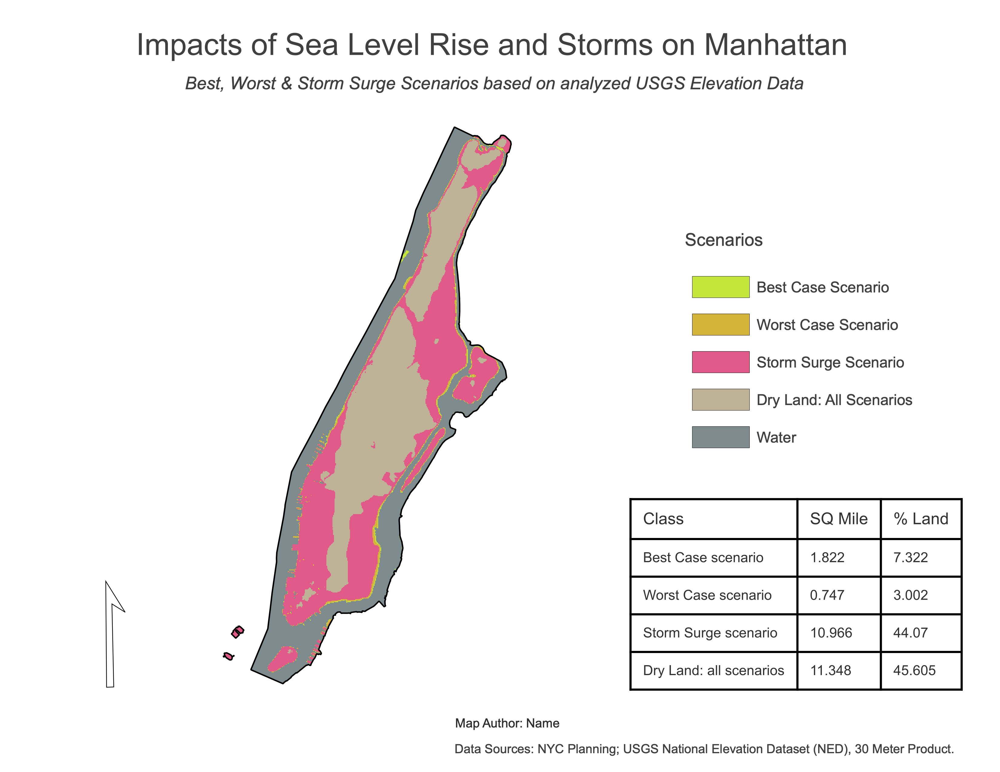

Preamble
New York City is located in the vulnerable coastal zone and has been in the path of powerful hurricanes before — on average, once every 75 years (Naparstek 2005). In 1821, a major hurricane caused tremendous destruction in Manhattan. A hurricane in 1893 removed the mile-long barrier Hog Island off the southern coast of the Rockaways while also razing southern Brooklyn and Queens via a 10-meter (m) storm surge. More recently, Hurricane Sandy (2012) hit the city hard, causing significant damage, requiring extensive repair and replacement of infrastructure.
Global climate change has raised sea levels worldwide during the twentieth century at a rate of roughly 1.7 millimeters (mm) per year (Church and White 2006), a trend that will continue for many more decades. More alarming, the rate of sea level rise is accelerating. Recent satellite data shows sea level rise at an annual rate of 3.19 mm since 1993.
Sea-level rise is caused by three major factors:
Total ocean water volume — Ocean volume increases as water currently locked up in frozen soils and land glaciers melts and flows into the ocean.
Sinking coastlines — Land can sink for a variety of reasons. For example, the Louisiana coastline is sinking due to subsidence of soft marsh soils combined with coastal erosion. This process is accelerated by resource extraction and the removal of wetlands. Melting land glaciers cause rebounding of the land mass, which can lead to a sinking on the other side of the geologic plate, as is happening along the northern coast of central Europe as Scandinavia is lifting.
Ocean temperature — Warmer water expands, so a warmer ocean will require more space than a cooler ocean. Ocean temperature, in turn, is a function of atmospheric greenhouse gas concentrations, as well as how well the ecosphere can remove greenhouse gases from the atmosphere.
In this fifth assignment, you will utilize the Class 5 Technical Lab as a guide to complete your fifth mapping project utilizing the USGS 1 arc-second DEM Product to determine land mass within the Manhattan Borough prone to inundation and storm surge, made increasingly worse by sea-level rise.
You will determine the area of the Manhattan Borough subject to flooding under two sea level rise scenarios (best case and worst case) and a major hurricane. The specific questions you want to answer with this project are as follows:
- Question 1: How much of Manhattan will be inundated by rising sea levels by 2100?
- Question 2: How much of Manhattan is at risk of a 10 m (30-foot) storm surge?
A synopsis of the technical steps of the assignment listed as follows:
- Download Class 5 assignment data which includes 2 DEM tiles + a vector outline of the Manhattan Borough, NYC.
- Mosaic the two raster datasets into one continuous raster dataset.
- Mask (clip) the mosaic raster via the NYC Manhattan Borough vector layer.
- Utilize
constatements to isolate pixels that fall into potential flooding and storm surge thresholds. - Utilize the Raster Calculator to derive a final layer with threshold categories.
- Utilize the Field Calculator to derive areal totals and percentages across scenario categories.
- Create an nominal thematic map and respective legend for the scenario categories.
- Incorporate a summary table into the final layout.
- Complete assignment submission layout; load to assignment 5 PDF at CANVAS.
Data
The starter data utilized in this mapping includes a vector feature for the Borough of Manhattan and two USGS DEM raster tile coverage for Manhattan.


Class 5 Readings:
This week’s reading that will be featured on the upcoming quiz will be from Essentials of Geographic Information Systems textbook. There is one supplemental reading for your reference (Not featured on the quiz).
The Class 5 quiz (03/04/2023 - Monday) will feature 10 questions covering content in the textbook Chapter 6 as noted below:
- Essentials of Geographic Information Systems textbook - Chapter 6, Section 6.1 Raster Data Models - pages 129 - 135.
Supplemental reading
Assignment Step 1
- Download the Class 5 assignment data
The original DEM dataset comes from USGS National Map. See the animation below for the tile interface where you can download DEM tiles.

- Create an assignment
.mxd, placing it within your assignment 5 directory. Establish an ArcCatalog connection to the unzipped data directory.
Assignment Step 2
- Refer to Class 5 Technical Lab to first load and then Mosaic to New Raster an output that has full coverage for Manhattan Borough.
Assignment Step 3
- Next, Mask the raster with the vector layer so that the full coverage raster is ‘clipped’ to the edge of Manhattan Borough. Going forward, this will be the input raster for initial processing steps below.
Assignment Step 4
- Run the series of Conditional (CON) statements in order to isolate raster cells that meet scenario criteria as follows:
- Which land is already underwater (elevation ≤ 0 m)
- Which areas will flood under a best-case scenario (BCS) (≤ 0.28 m)
- Which will flood under the worst-case scenario (WCS) (≤ 1.12 m)
- Which will flood under an extreme storm surge (≤ 10 m)
- Which is safe from flooding under all scenarios (> 10 m)
Assignment Step 5
- With the scenario outputs are complete, utilize the Raster Calculator to create a final output raster using the following formula:
"flood_storm" + "flood_BCS" + "flood_WCS" + "land"
Assignment Step 6
- Next, create summary statistics for each scenario category. To do this, utilize the Field Calculator to create 3 new columns:
- Area as
square meters - Area as
square kilometers - Percentage of land area per scenario.
- Area as
- Once complete, you will incorporate the output table into the final cartographic layout (use the same process as Assignment 2 - NYC 311 Service Points to insert a table into a map layout).
Assignment Step 7
- Proceed to the final map layout. Here you will also create a legend with the following nominal categories
Scenariowhich will be used in lieu of thevaluecolumn:
| Value | Scenario |
|---|---|
| 0 | Water |
| 7 | Above Water (No Flooding) |
| 12 | Land flooded by a storm surge |
| 15 | worst-case scenario |
| 16 | best-case scenario |
- Refer to Map Layout & Deliverable below for other cartographic details.
Map layout & Deliverable:
To development the final map design, utilize the map example PDF below to help guide your process.
Final map layout will include the following elements on either a 11x17” or 8.5x11” Portrait/Landscape 300 DPI:
- Main map frame featuring your cartographic output
- Insert summary table
- A map title
- Legend representing each nominal scenario category
- Simple scale bar tailored to a meaningful distance(s) for Manhattan, NYC
- North Arrow
- Data source & Author tag

Example Layout - Assignment 5 Utilize the following map example to guide your design process: